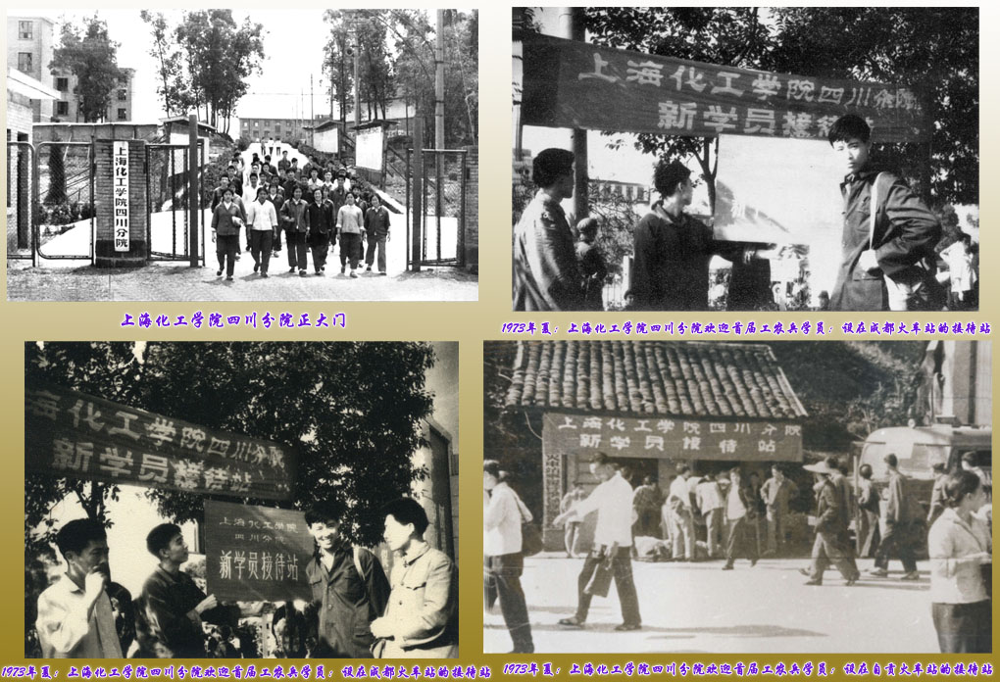
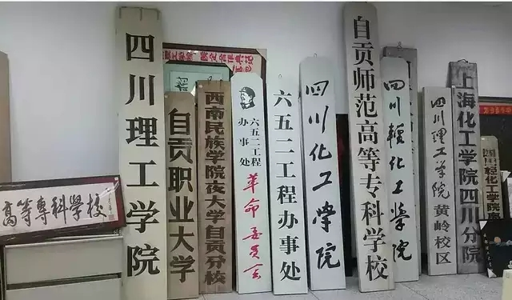
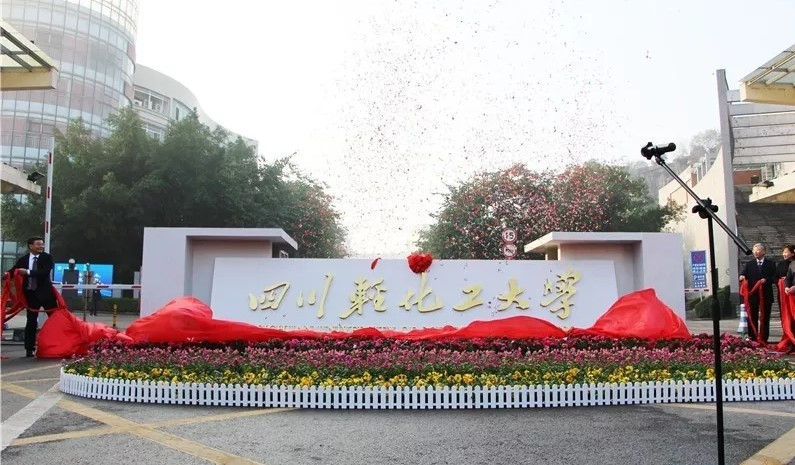
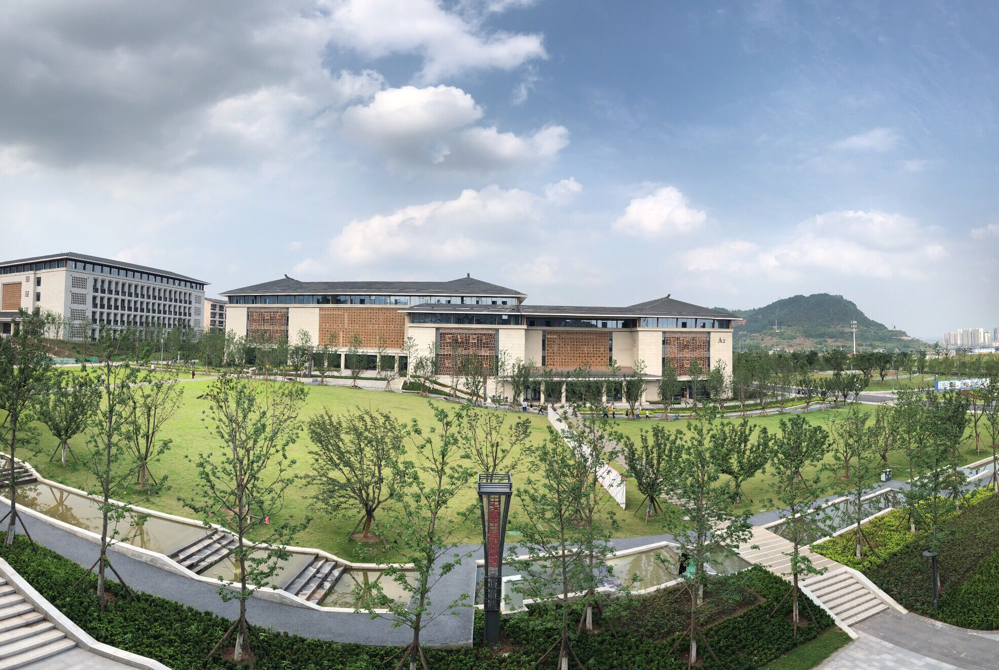

1965年，根据毛泽东主席“备战、备荒、为人民”的战略决策，时任国务院总理周恩来亲自批示，
作为教育部重点高等学校的华东化工学院（现华东理工大学）内迁部分保密专业，
选址自贡黄岭创建华东化工学院西南分院（对外称之为“652工程”）。
1972年4月21日，根据上海市委的决定，将华东化工学院改名为上海化工学院；
撤销“652工程”办事处，华东化工学院西南分院改为上海化工学院四川分院。
1973年，全国计划工作会议期间，相关部门又决定批给四川分院基建投资费用60万元；9月6日，上海化工学院四川分院正式开学。
1979年7月24日，国务院、教育部发文同意上海化工学院停办四川分院，由四川省利用原分院的
用地、校舍以及大部分设备、仪器、图书、资料等，结合分院留川教职工和泸州化工学校为基础，新成立四川化工学院，归四川省人民政府领导。
1983年5月，四川化工学院设置食品工程、发酵工程两个轻工专业；7月6日，省政府批准四川化工学院更名为四川轻化工学院。

2003年，经教育部批准，由四川轻化工学院、自贡师范高等专科学校、自贡高等专科学校和自贡教育学院合并组建四川理工学院。


2018年12月教育部批准更名为四川轻化工大学


位于成都天府新区的成都高等研究院（165亩，20万平方米建筑）和自贡东部新城校区（1100亩，30万平方米建筑，2020年9月正式启用）正在建设中